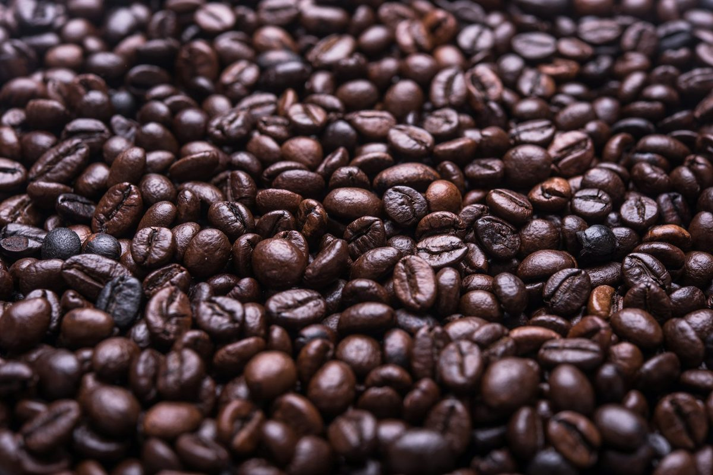
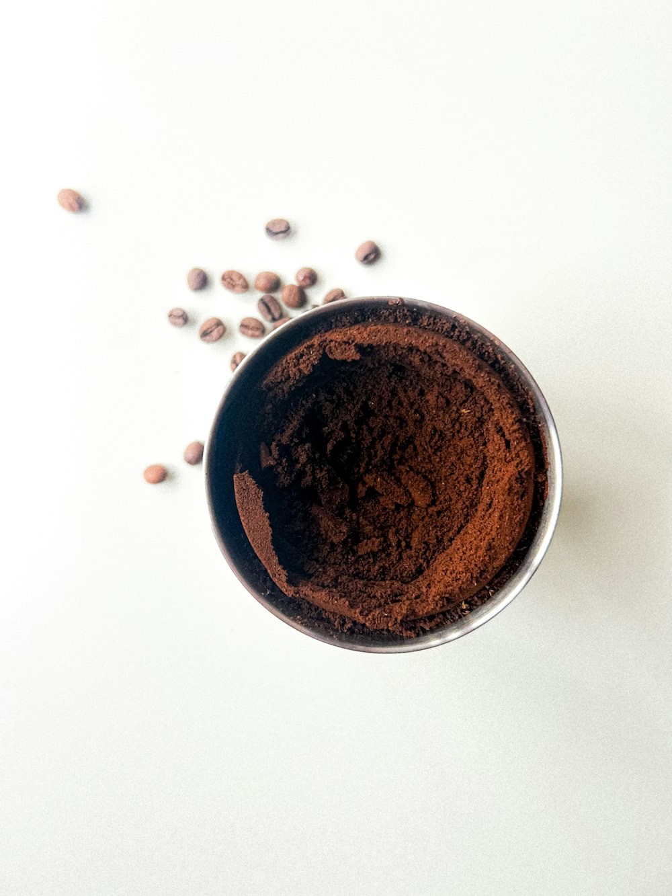
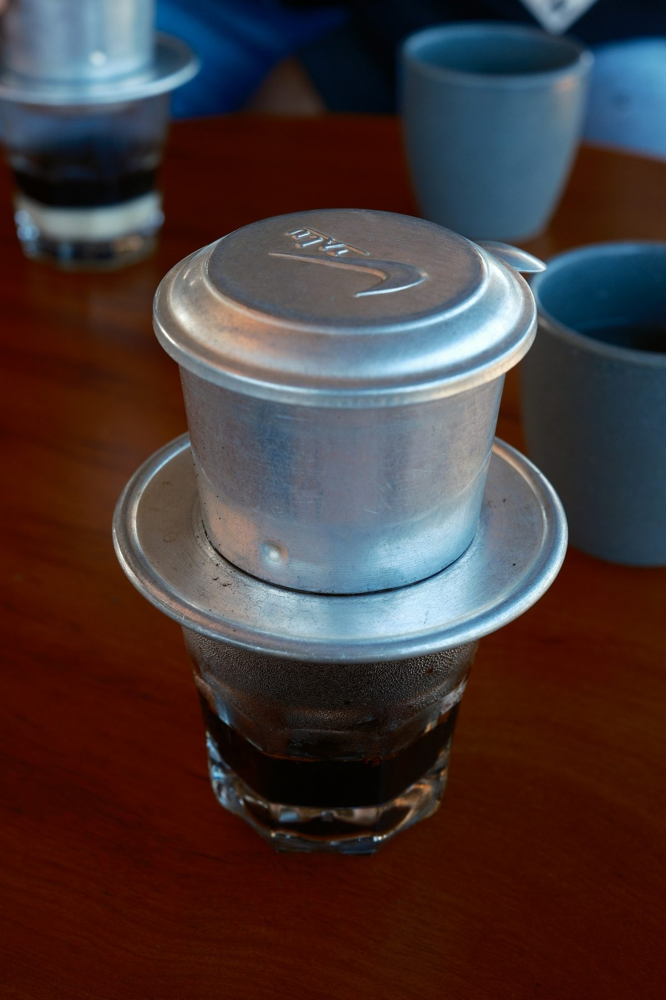
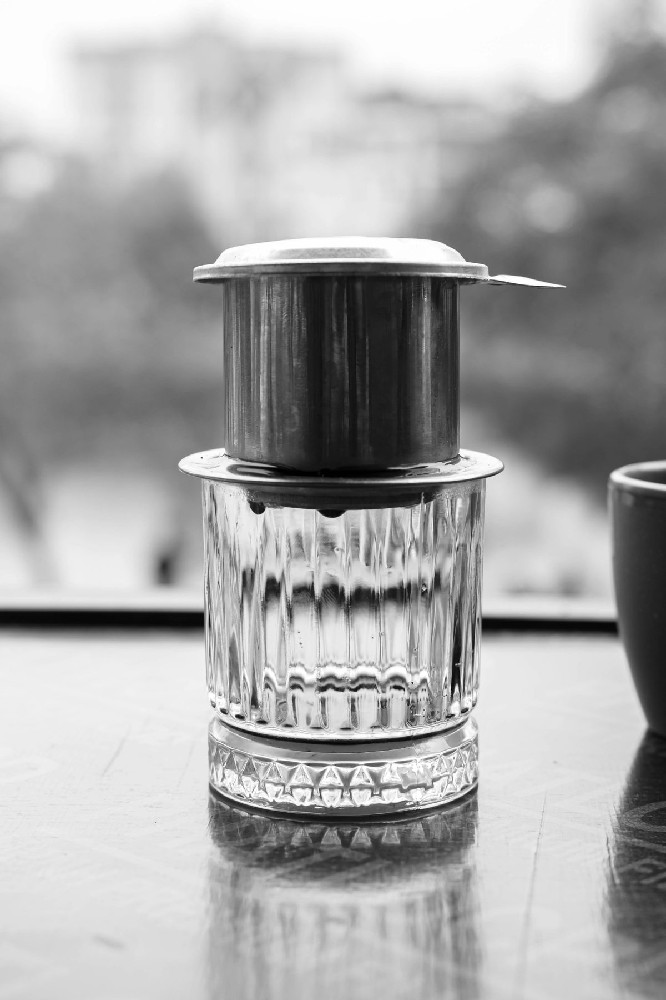

Bước 1. Chuẩn bị phin và cà phê
Tráng phin và cốc bằng nước nóng. Cho cà phê xay dành cho phin vào phễu, dàn mặt bột nhẹ nhàng rồi đặt nắp gài vừa chạm mặt cà phê. Không nén quá chặt để nước chảy đều.

Bước 2. Làm ướt bột và rót nước
Rót một ít nước nóng để làm ướt đều cà phê rồi chờ khoảng 20–30 giây. Tiếp tục rót đến lượng mong muốn và đậy nắp. Quan sát dòng chảy, đừng cố ép phin nếu nước đang nhỏ giọt đều.

Điều chỉnh theo dòng chảy: Nếu chảy quá nhanh và vị nhạt, thử xay mịn hơn một chút hoặc tăng nhẹ lượng cà phê. Nếu chảy quá chậm và vị gắt, thử xay thô hơn hoặc giảm lượng cà phê.
Bước 3. Nếm và ghi lại công thức
Khi cà phê đã nhỏ giọt xong, nếm thử lúc còn ấm. Ghi lại loại hạt, lượng cà phê và nước. Chỉ thay đổi một yếu tố mỗi lần để tìm ra công thức hợp khẩu vị.

Bước 4. Rửa và để khô
Đổ bã, rửa các bộ phận của phin và để khô hoàn toàn trước khi cất. Dụng cụ sạch giúp hạn chế mùi cũ ảnh hưởng đến lần pha tiếp theo.